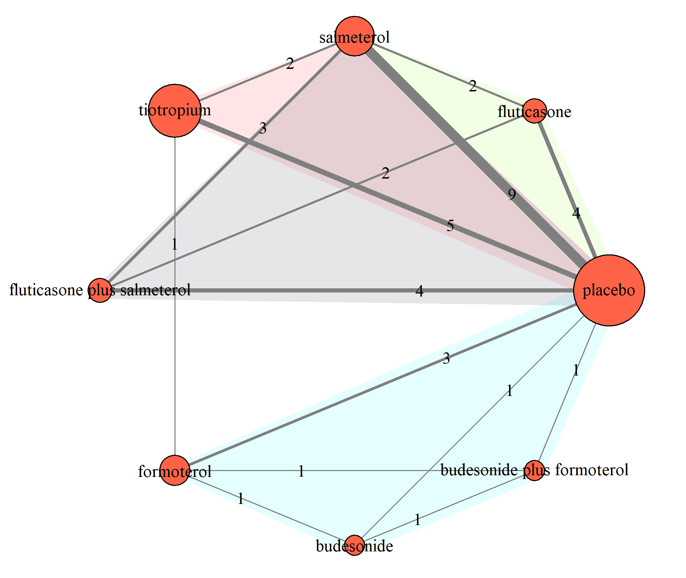
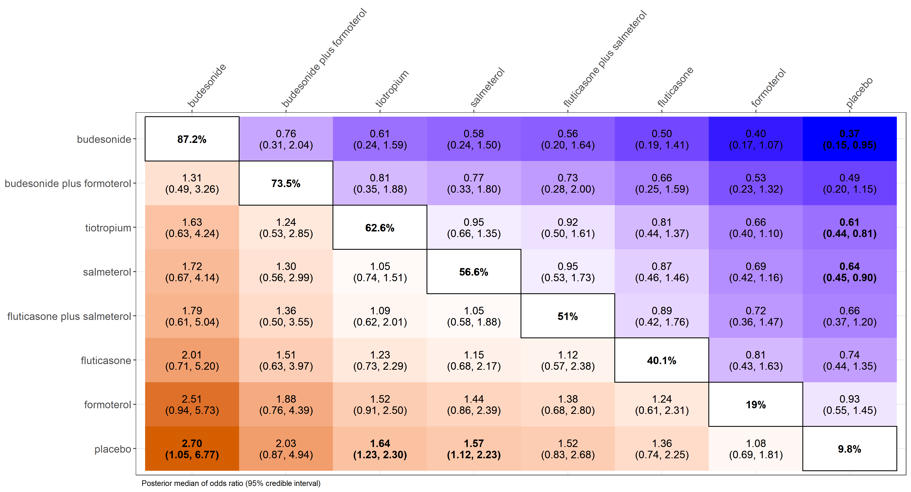
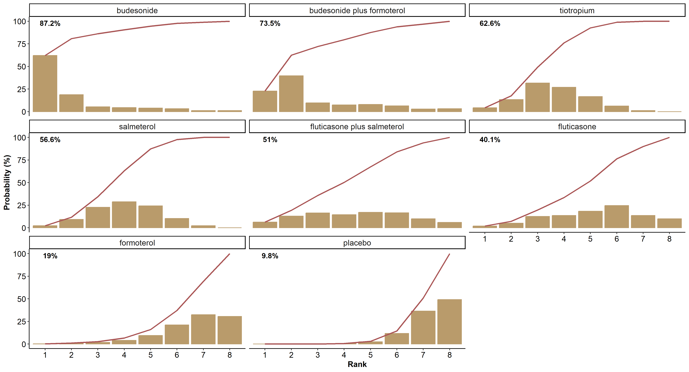

Official Git repository of rnmamod R package
In R Views November 2021: “Top 40” New CRAN Packages
In Medium Peek-a-boo: Evidence synthesis using the rnmamod R package
In the YouTube channel of ESMARConf2023
Contributors
Loukia Spineli, Chrysostomos Kalyvas, Katerina Papadimitropoulou
Website
The website of rnmamod currently includes two short tutorials (Description of the network and Perform network meta-analysis). There is also a structured reference list to facilitate access to the documentation of the functions available in the package.
Description
The rnmamod package performs one-stage fixed-effect or random-effects Bayesian network meta-analysis (NMA) while adjusting for missing participant outcome data (MOD) using the pattern-mixture model. In the case of two interventions, the package performs one-stage Bayesian pairwise meta-analysis. Standard aggregate data NMA is a special case of NMA with MOD, where either all studies or no studies have MOD available, respectively.
The package handles data inputs in arm-based format: - binary data (effect size: odds ratio, risk ratio, and risk difference)
- continuous data (effect size: raw and standardised mean differences, ratio of means).
The rnmamod package comprises a suite of all necessary models for estimation and prediction of the intervention effect, and evaluation of the consistency assumption locally and globally. Also includes a rich suite of visualisation tools to aid in interpretation of the results and preparation of NMA manuscript submission. Missing participant outcome data are addressed in all models of the package.
Getting started
Run the following code to install and load the package from CRAN:
or run the following code to install the development version of the package:
Example
Baker et al. (2009) comprising 21 trials comparing seven pharmacologic interventions with each other and placebo in chronic obstructive pulmonary disease (COPD) patients. The exacerbation of COPD (harmful outcome) is the analysed binary outcome.
head(nma.baker2009)
#> study t1 t2 t3 t4 r1 r2 r3 r4 m1 m2 m3 m4 n1 n2 n3 n4
#> Llewellyn-Jones, 1996 1 4 NA NA 3 0 NA NA 1 0 NA NA 8 8 NA NA
#> Paggiaro, 1998 1 4 NA NA 51 45 NA NA 27 19 NA NA 139 142 NA NA
#> Mahler, 1999 1 7 NA NA 47 28 NA NA 23 9 NA NA 143 135 NA NA
#> Casaburi, 2000 1 8 NA NA 41 45 NA NA 18 12 NA NA 191 279 NA NA
#> van Noord, 2000 1 7 NA NA 18 11 NA NA 8 7 NA NA 50 47 NA NA
#> Rennard, 2001 1 7 NA NA 41 38 NA NA 29 22 NA NA 135 132 NA NANetwork plot
Create the network plot using the netplot function:
# The names of the interventions in the order they appear in the dataset
interv_names <- c("placebo", "budesonide", "budesonide plus formoterol", "fluticasone", "fluticasone plus salmeterol", "formoterol", "salmeterol", "tiotropium")
netplot(data = nma.baker2009, drug_names = interv_names, show_multi = TRUE, edge_label_cex = 1)
Perform Bayesian random-effects network meta-analysis
The following code performs a Bayesian random-effects network meta-analysis under the missing at random assumption while using an intervention-specific informative missingness odds ratio (assumption = "IDE-ARM") in the logarithmic scale:
League table
Illustrate all possible pairwise comparisons of the interventions using a league heatmap. Interventions are sorted in decreasing order by their posterior mean SUCRA (surface under the cumulative ranking) value in the main diagonal:
league_heatmap(full1 = res, drug_names1 = interv_names)
Rankogram with SUCRA curves
The following code presents the hierarchy of the interventions in the network using integrated rankograms and SUCRA curves:
rankosucra_plot(full1 = res, drug_names1 = interv_names)
Funding source
The development of thernmamod package was funded by the German Research Foundation (Deutsche Forschungsgemeinschaft) (grant no. SP 1664/1-3)